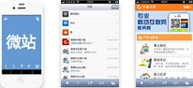

网络平台搭建解决方案
传悦网络平台搭建解决方案
-
WEB网站
用于常规电脑网页端用户，声，字，图，视展现的强大功能的个性化的企业网站，商城网站，社区网站等。
查看详细解决方案内容
-
WAP网站
WAP(Wireless Application Protocol)是无线应用协议的缩写，把WEB端网站生成合适手机分辨率的网站。
查看详细解决方案内容
-
APP应用
品牌APP类型多样化，包括产品展示、在线商店、小游戏和视频等更加强大的移动终端。
查看详细解决方案内容
-

微网站（微信公众平台）
微信营销神器，打造个性化的企业微网站平台。增加微信与用户的互动与粘度性。
查看详细解决方案内容
微网站解决方案
微网站是传悦依托微信公众平台资源，通过开发模式植入到微信公众平台的企业官方微站系统。微信公众平台在微信基础平台上新增的功能模块，通过这一平台，打造自己的一个微信的公众号，并在微信平台上实现和特定群体的文字、图片、语音的全方位沟通、互动 。商家、企业、草根、媒体……他们都加入了微信公众平台，你还在等待什么？
-
基于微信平台为企业提供的集品牌展示、产品资讯、客户服务；
-
基于微信平台为区域城市门户，行业平台提供的集新闻信息，生活资讯、图文展示等；
-
基于微信平台为行业垂直门户、企业商家提供产品展示、活动促销、产品购买等。